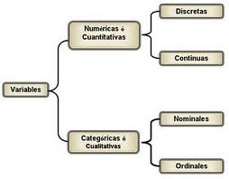

Una variable es una propiedad característica de la población en estudio, susceptible de tomar diferentes valores, los cuales se pueden observar y medir.
Las variables pueden ser de dos tipos: cualitativas y cuantitativas.
Las variables cualitativas se clasifican a su vez en nominales y ordinales, en tanto que las variables cuantitativas se clasifican a su vez en discretas y continuas.
Variables cualitativas: son aquellas que no se pueden medir numéricamente ejemplo: nacionalidad, color de la piel, sexo, etc.
A su vez, las variables cualitativas pueden ser:
Nominales: son datos que corresponden a categorías que por su naturaleza no admiten un orden. Por ejemplo: sexo (masculino y femenino); carrera de estudio: economía, contabilidad, administración, etc.
Ordinales: son aquellos que corresponden a evaluaciones subjetivas que se pueden ordenar o jerarquizar. Por ejemplo: en una competencia artística las posiciones de los ganadores se ordenan o jerarquizan en primer lugar, segundo lugar, tercer lugar, cuarto lugar, etc.
Variables cuantitativas: son aquellas que tienen valor numérico como la edad, el precio de un producto, ingresos anuales de un consumidor, etc.
A su vez, las variables cuantitativas pueden ser:
Discretas: estas son aquellas que sólo pueden tomar valores enteros como 1, 2, 8, -4, etc. En este sentido, los hermano en una familia podrán ser: 1, 2, 3..., etc. Sin embargo, nunca podrán ser 1.5 o 2.3.
Continuas: son aquellas que pueden tomar cualquier valor real dentro de un intervalo o rango. Por ejemplo, los litros de leche ordeñados podrán ser 1.5 o 10.3 etc.
